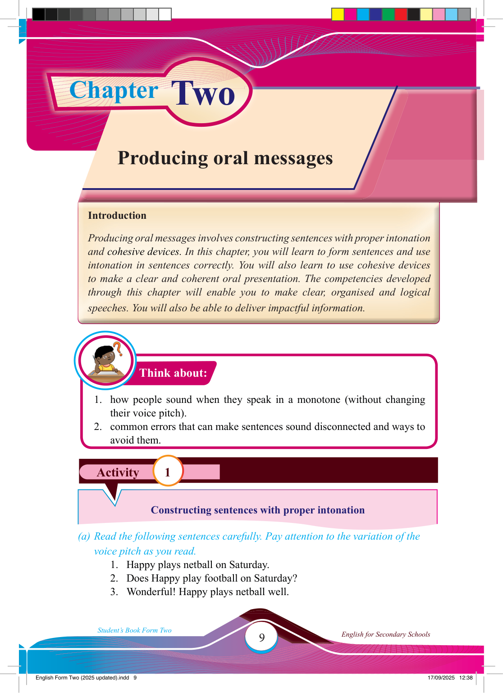

Chapter Two
Activity 1
Think about:
Producing oral messages
Introduction
Producing oral messages involves constructing sentences with proper intonation and cohesive devices. In this chapter, you will learn to form sentences and use intonation in sentences correctly. You will also learn to use cohesive devices to make a clear and coherent oral presentation. The competencies developed through this chapter will enable you to make clear, organised and logical speeches. You will also be able to deliver impactful information.
1. how people sound when they speak in a monotone (without changing their voice pitch).
2. common errors that can make sentences sound disconnected and ways to avoid them.
Constructing sentences with proper intonation
(a) Read the following sentences carefully. Pay attention to the variation of the voice pitch as you read.
1. Happy plays netball on Saturday.
2. Does Happy play football on Saturday?
3. Wonderful! Happy plays netball well.
17/09/2025 12:38